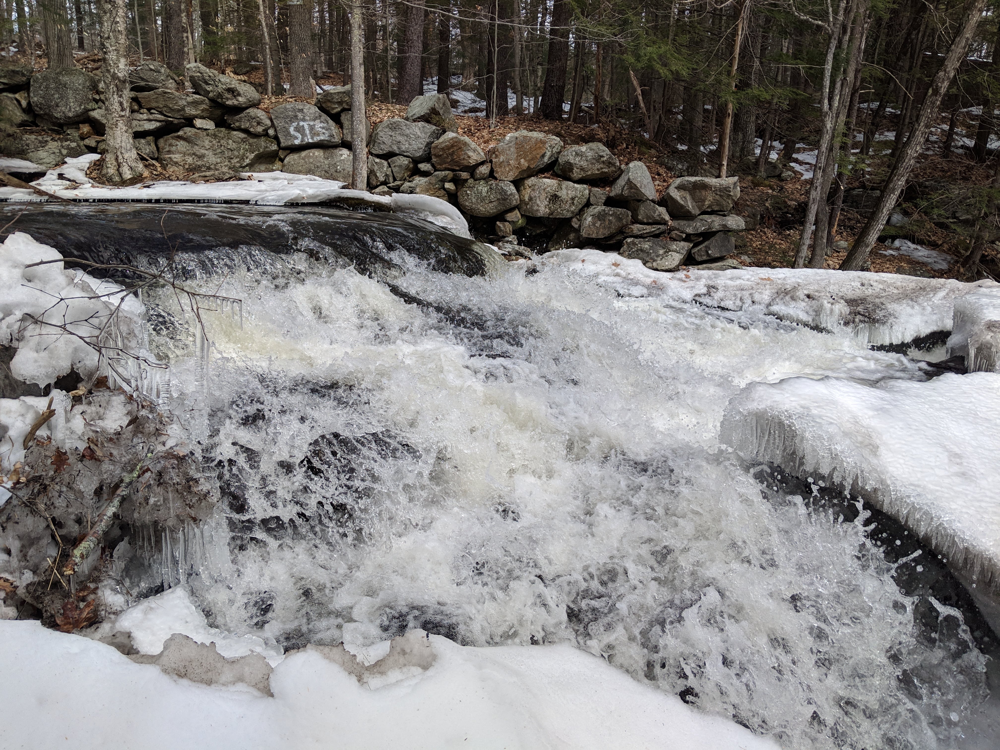
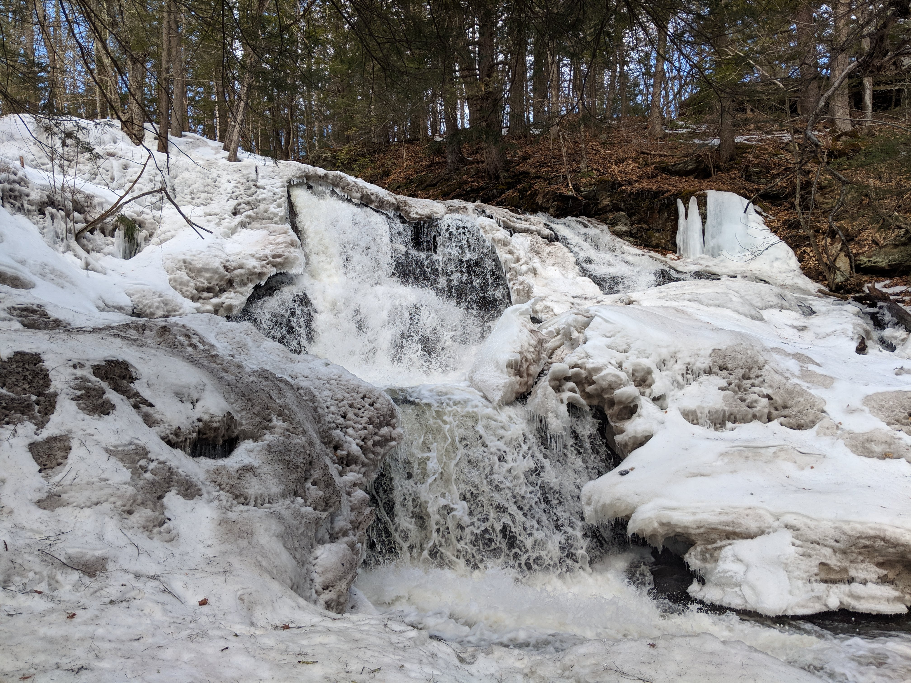
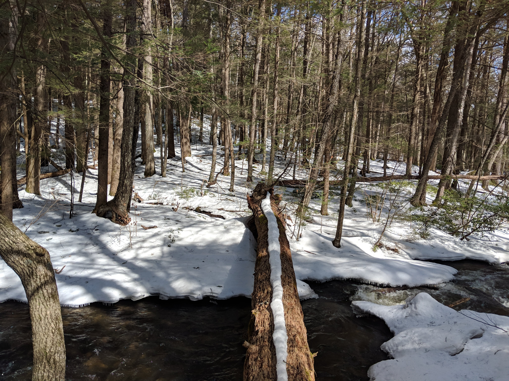

Distance
Distance Elevation
Elevation Observed Wildlife
Observed WildlifeGarwin Falls is only a third of a mile away from the parking lot. In the spring, the falls were raging and a pretty cool spot to hang out. My partner and I explored further down the brook, a very peacful area. The trail deatours from the brook, but I would recommend turning around at this point. Overall, it was a cool spot to visit, but I wouldn't go too our of your way to visit this.


